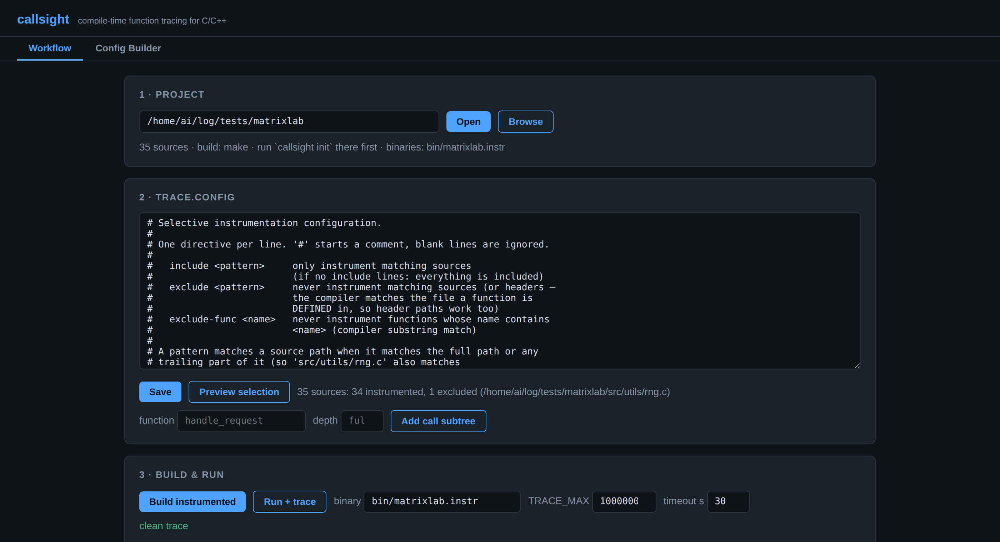

Workflow tab
The end-to-end pipeline in four numbered steps, driving exactly the same code as the CLI.

Project and configOpening a project reports its source count, build system and instrumented binaries; the preview shows what the current config selects.
- Project — browse the filesystem (directories badged
make/cmake) and open one. You get the source count, the detected build system, and any instrumented binaries already present. - trace.config — an editor with save, a selection preview
(N sources: X instrumented, Y excluded), and a call-subtree helper: type a
function name and optional depth to resolve its subtree through the static call graph
and append the matching
include-funcline. - Build & run — one-click instrumented build
(
make instrumentor the CMake flow) with the full log captured, then run the binary withTRACE_ENABLE=1, aTRACE_MAXcap and a timeout. - Report — the analyzer result as a sortable table: calls, inclusive
and self time, plus the per-call
p50,p99andmax, with the summary line turning green onunmatched_exits=0. Anything that cut the capture short is called out above the table. - Flame graph — the same collapsed stacks the CLI exports, rendered in the browser. Each frame is as wide as the time spent inside it; click one to zoom into that subtree and click it again to zoom back out.

The reportClick any column header to re-sort. Rows arrive ordered by self time, so the hot leaves are on top.
Config Builder tab
A visual editor for trace.config — no pattern syntax to memorize.

Files on the left, functions on the rightBoth panes filter live; the
symbols: badge names the backend that produced the scan.- Pick a folder and scan. The builder enumerates every source file and
the functions defined in them. It uses
ctagswhen available — asymbols:badge next to the Scan button tells you which backend served the scan: system ctags, the bundled static copy (auto-downloaded on first scan), or the built-in regex fallback. - Searchable checkbox panes — one for files, one for functions. Filter either list and tick what you care about.
- Per-function actions — for each selected function choose
include-subtree (expands through the static call graph, like
include-func) or exclude. - Preview — writes the generated config, then dry-runs the selection against it: how many sources would be instrumented versus excluded with your current choices. (The write is required — the dry run reads the saved file.)
- Apply — writes
trace.configinto the project, ready for the next instrumented build.
Both buttons ask before overwriting an existing config whose content differs.
Symbol enumeration
The builder needs to know what functions a project defines. In order of preference:
- Universal Ctags on
PATH— accurate parsing, withstaticdetection. - The bundled static ctags — downloaded on first scan into
~/.callsight/binand checksum-verified. Run it ahead of time withcallsight provision, or inspect what would be used with the same command. - The regex fallback — the same heuristic parser that backs
include-func. Always available, no dependency.
Notes
It runs builds and binaries on the host. The UI binds to
127.0.0.1 by default. --host 0.0.0.0 exposes it on the network —
only do that on a trusted one.
- Everything the UI does goes through the same functions as the CLI. There are no behavior differences between driving it from the browser and from a shell.
- CMake is fetched ephemerally through
uvxwhen the host has none, so a CMake project works without installing CMake system-wide. - The UI's dependencies (FastAPI, uvicorn) live in the
uiextra; the core package stays stdlib-only.